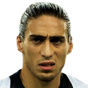

URUGUAY
La selección de fútbol de Uruguay es el equipo representativo del país en las competiciones oficiales. Su organización está a cargo de la Asociación Uruguaya de Fútbol. La Selección de fútbol de Uruguay es la primera Campeona del Mundo y Campeona de América.

Suárez

Cavani

Rodríguez
Bentancur

Vecino

Valverde
Silva
van Dijk

Giménez

Cáceres
Muslera

Óscar Washington Tabárez Silva es un docente, ex-jugador y el actual entrenador de fútbol de la selección uruguaya. Como futbolista jugó en cinco equipos uruguayos y en uno mexicano. Como entrenador, dirigió diez equipos diferentes en cinco países, además de dirigir en dos ocasiones la Selección Sub-20 uruguaya y también, la selección mayor.
| Jugadores disponibles | Jugadores disponibles | |
|---|---|---|
Jens Lehman, Oliver Kahn, Torsten Frings, Michael Ballack, Per Mertesacker, Christoph Metzelder, Alexander Madlung, Jan Schlaudraff, Stefan Kiessling, Christian Schulz, Arne Friedrich, Mike Hanke,Tim Borowski |
Jens Lehman, Oliver Kahn, Torsten Frings, Michael Ballack, Per Mertesacker, Christoph Metzelder, Alexander Madlung, Jan Schlaudraff, Stefan Kiessling, Christian Schulz, Arne Friedrich, Mike Hanke,Tim Borowski |